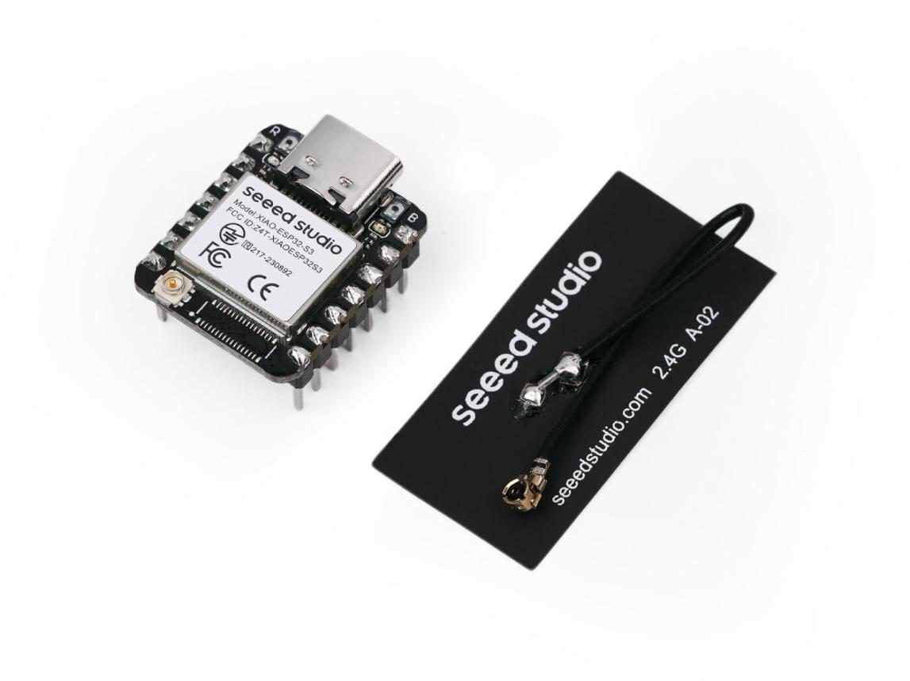
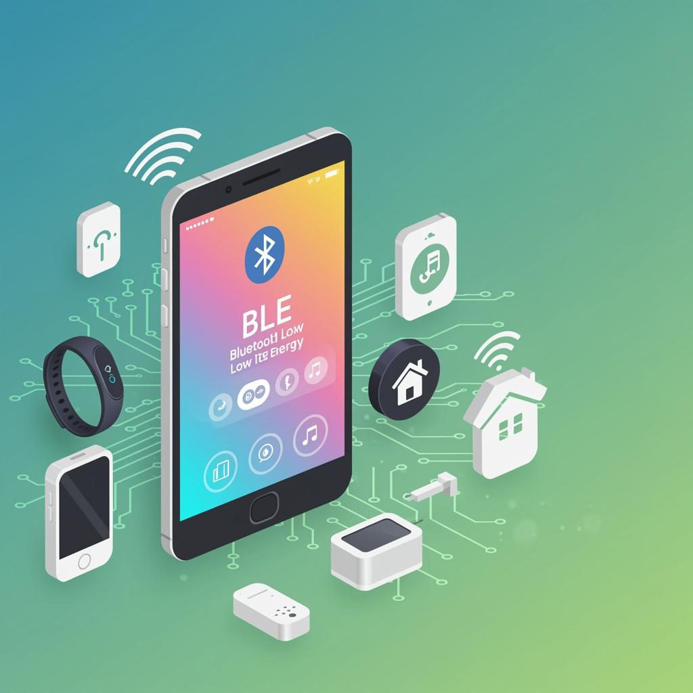
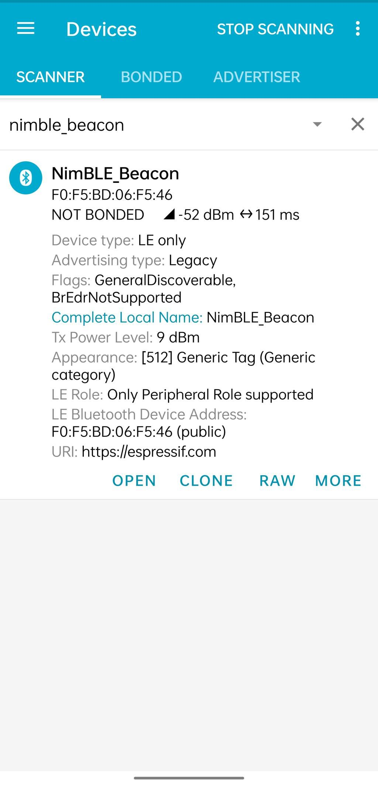

第七课：XIAO ESP32S3 的 Wi-Fi、BLE 与网络通信原理
前面六课，我们已经从芯片底层逐步学习到了 FreeRTOS 多任务系统。
现在进入一个重要阶段：让 XIAO ESP32S3 真正连接外部世界。
本课将从无线硬件原理开始，逐步讲解 Wi-Fi、蓝牙 BLE、TCP/IP、HTTP、MQTT、网络事件和 OTA 固件升级。
最终目标是让你能够开发一个完整的联网设备：
- XIAO ESP32S3 连接家庭或办公 Wi-Fi。
- 手机通过 BLE 配置设备。
- 设备通过 MQTT 向服务器发送数据。
- 手机或电脑远程控制设备。
- 设备能够在线升级固件。
一、ESP32-S3 的无线通信硬件
首先了解 XIAO ESP32S3 的无线能力。

ESP32-S3 内部集成了：
| 功能 | 规格 |
|---|---|
| Wi-Fi | 2.4GHz Wi-Fi 4（802.11 b/g/n） |
| 蓝牙 | Bluetooth LE 5，支持 LE 功能 |
| 经典蓝牙 | 不支持 Bluetooth Classic |
| TCP/IP | 支持 IPv4 网络协议栈 |
| 无线频段 | 2.4GHz |
特别注意：ESP32-S3 不支持传统蓝牙 Classic，因此不能直接按照经典蓝牙 SPP 串口模块的方式开发。
它主要使用 BLE，也就是低功耗蓝牙。
1. Wi-Fi 和 BLE 的区别
- 连接路由器
- 接入局域网
- 访问互联网
- 传输大量数据

- 手机连接设备
- 近距离配置
- 发送控制命令
- 低功耗通信
一个典型的智能设备可以同时使用两种技术：
- BLE 负责手机与设备之间的近距离配置。
- Wi-Fi 负责设备与服务器之间的数据通信。
2. Wi-Fi 和 BLE 为什么可以同时工作？
ESP32-S3 的 Wi-Fi 和 BLE 共享 2.4GHz 无线资源。
芯片使用共存协调机制，安排不同无线协议的射频使用时间。
这意味着它们可以协同工作，但不是两个独立射频同时无限制地工作。
实际运行中可能受到：
- 无线信号强度；
- Wi-Fi 数据传输量；
- BLE 广播间隔；
- BLE 连接间隔；
- 天线设计；
- 无线干扰；
等因素影响。
因此，正式产品需要进行 Wi-Fi 与 BLE 共存测试。
二、Wi-Fi 的工作原理
1. Wi-Fi 有哪些工作模式？
ESP32-S3 常用三种模式：
| 模式 | 英文 | 作用 |
|---|---|---|
| STA | Station | 连接已有路由器 |
| AP | Access Point | 自己创建 Wi-Fi 热点 |
| AP+STA | Station + AP | 同时连接路由器并提供热点 |
STA 模式
这是最常用的方式。
适合：
- 上传传感器数据；
- 连接 MQTT 服务器；
- 访问 HTTP API；
- 接收远程控制命令。
AP 模式
ESP32-S3 自己创建热点。
适合：
- 初次设备配置；
- 手机直接连接设备；
- 本地网页控制；
- 无路由器环境下的设备通信。
AP 模式本身不意味着可以访问互联网，它只是创建了一个无线局域网。
三、ESP-IDF Wi-Fi 软件架构
ESP-IDF 的 Wi-Fi 系统不是简单的一个连接函数，而是由多个模块协同工作的。
这里要记住：
Wi-Fi 负责无线链路，而 TCP/IP 负责网络通信。
连接 Wi-Fi 成功，不代表一定能够访问互联网。
例如：
- Wi-Fi 连接成功；
- 路由器分配了 IP；
- DNS 解析失败；
- 服务器连接失败。
这些是不同层次的问题，需要分别排查。
四、实战：使用 ESP-IDF 连接 Wi-Fi
现在开始编写第一个联网程序。
目标：
- 初始化 NVS。
- 初始化网络接口。
- 创建默认事件循环。
- 初始化 Wi-Fi。
- 配置 SSID 和密码。
- 连接路由器。
- 获取 IP 地址。
1. Wi-Fi 初始化代码
#include <stdio.h>
#include <string.h>
#include "freertos/FreeRTOS.h"
#include "freertos/event_groups.h"
#include "esp_event.h"
#include "esp_log.h"
#include "esp_netif.h"
#include "esp_wifi.h"
#include "nvs_flash.h"
#define WIFI_SSID "YOUR_WIFI_NAME"
#define WIFI_PASSWORD "YOUR_WIFI_PASSWORD"
#define WIFI_CONNECTED_BIT BIT0
#define WIFI_FAIL_BIT BIT1
static const char *TAG = "XIAO_WIFI";
static EventGroupHandle_t wifi_event_group;
static int retry_count = 0;
#define MAX_RETRY 5
static void wifi_event_handler(
void *arg,
esp_event_base_t event_base,
int32_t event_id,
void *event_data)
{
if (event_base == WIFI_EVENT &&
event_id == WIFI_EVENT_STA_START) {
esp_wifi_connect();
} else if (event_base == WIFI_EVENT &&
event_id == WIFI_EVENT_STA_DISCONNECTED) {
if (retry_count < MAX_RETRY) {
retry_count++;
ESP_LOGW(TAG, "Retry WiFi: %d", retry_count);
esp_wifi_connect();
} else {
xEventGroupSetBits(
wifi_event_group,
WIFI_FAIL_BIT
);
}
} else if (event_base == IP_EVENT &&
event_id == IP_EVENT_STA_GOT_IP) {
ip_event_got_ip_t *event =
(ip_event_got_ip_t *)event_data;
ESP_LOGI(
TAG,
"Got IP: " IPSTR,
IP2STR(&event->ip_info.ip)
);
retry_count = 0;
xEventGroupSetBits(
wifi_event_group,
WIFI_CONNECTED_BIT
);
}
}
void wifi_init(void)
{
wifi_event_group = xEventGroupCreate();
ESP_ERROR_CHECK(nvs_flash_init());
ESP_ERROR_CHECK(esp_netif_init());
ESP_ERROR_CHECK(
esp_event_loop_create_default()
);
esp_netif_create_default_wifi_sta();
wifi_init_config_t cfg = WIFI_INIT_CONFIG_DEFAULT();
ESP_ERROR_CHECK(
esp_wifi_init(&cfg)
);
ESP_ERROR_CHECK(
esp_event_handler_register(
WIFI_EVENT,
ESP_EVENT_ANY_ID,
&wifi_event_handler,
NULL
)
);
ESP_ERROR_CHECK(
esp_event_handler_register(
IP_EVENT,
IP_EVENT_STA_GOT_IP,
&wifi_event_handler,
NULL
)
);
wifi_config_t wifi_config = {0};
strlcpy(
(char *)wifi_config.sta.ssid,
WIFI_SSID,
sizeof(wifi_config.sta.ssid)
);
strlcpy(
(char *)wifi_config.sta.password,
WIFI_PASSWORD,
sizeof(wifi_config.sta.password)
);
wifi_config.sta.threshold.authmode =
WIFI_AUTH_WPA2_PSK;
ESP_ERROR_CHECK(
esp_wifi_set_mode(WIFI_MODE_STA)
);
ESP_ERROR_CHECK(
esp_wifi_set_config(
WIFI_IF_STA,
&wifi_config
)
);
ESP_ERROR_CHECK(esp_wifi_start());
}
void app_main(void)
{
wifi_init();
EventBits_t bits = xEventGroupWaitBits(
wifi_event_group,
WIFI_CONNECTED_BIT | WIFI_FAIL_BIT,
pdFALSE,
pdFALSE,
pdMS_TO_TICKS(30000)
);
if (bits & WIFI_CONNECTED_BIT) {
ESP_LOGI(TAG, "WiFi connected!");
} else if (bits & WIFI_FAIL_BIT) {
ESP_LOGE(TAG, "WiFi connection failed!");
} else {
ESP_LOGE(TAG, "WiFi timeout!");
}
}注意：
- 将 SSID 和密码替换为自己的网络配置。
- 不要把真实 Wi-Fi 密码提交到 GitHub。
- 生产项目应使用 NVS 或安全配置机制保存凭据。
WIFI_AUTH_WPA2_PSK是这里的教学配置，实际应根据路由器安全模式调整。- 正式工程还需要处理重复初始化、事件处理器注销和重新连接策略。
2. 连接成功后会发生什么？
典型流程：
esp_wifi_start()
↓
WIFI_EVENT_STA_START
↓
esp_wifi_connect()
↓
连接路由器
↓
WIFI_EVENT_STA_CONNECTED
↓
DHCP 获取 IP
↓
IP_EVENT_STA_GOT_IP
↓
开始网络通信这里有个非常重要的区别：
WIFI_EVENT_STA_CONNECTED 表示无线链路已连接。
IP_EVENT_STA_GOT_IP 表示设备已经获得 IP 地址。
开发中应该在获得 IP 后再启动依赖 IP 网络的业务。
五、TCP 和 UDP：网络数据如何传输？
Wi-Fi 连接成功后，下一步是理解网络协议。
ESP32-S3 使用 TCP/IP 协议栈进行网络通信。
1. TCP 是什么？
TCP 是 Transmission Control Protocol，即传输控制协议。
它的特点是：
- 面向连接；
- 可靠传输；
- 数据按序交付；
- 具备丢包重传机制；
- 有流量控制和拥塞控制。
例如：
XIAO ESP32S3 向服务器发送一条设备状态数据。
如果网络发生丢包，TCP 会根据协议机制处理重传。
适合：
- HTTP；
- MQTT；
- 文件传输；
- 设备控制；
- 可靠数据上传。
2. UDP 是什么？
UDP 是 User Datagram Protocol。
特点：
- 无连接；
- 协议开销较小；
- 不保证数据到达；
- 不保证数据顺序；
- 由应用自行处理必要的可靠性。
适合：
- 实时状态广播；
- 局域网设备发现；
- 对延迟敏感的数据传输；
- 自己实现可靠性机制的应用。
3. TCP 和 UDP 对比
| 项目 | TCP | UDP |
|---|---|---|
| 连接 | 有 | 无 |
| 可靠性 | 协议提供可靠传输 | 不保证 |
| 顺序 | 保证字节流顺序 | 不保证 |
| 延迟 | 受确认、重传等影响 | 通常较低 |
| 数据边界 | 字节流，没有消息边界 | 数据报有边界 |
| 典型应用 | HTTP、MQTT | DNS、实时数据、发现协议 |
注意：TCP 可靠传输不等于业务数据一定成功处理。设备还需要设计应用层确认、超时和重试机制。
六、HTTP：让 XIAO ESP32S3 访问网页和服务器
HTTP 是应用层协议。
你可以把它理解为：
XIAO ESP32S3 使用一种统一的请求和响应格式，与 Web 服务器交换信息。
1. HTTP 通信过程
例如设备想读取服务器上的温度配置：
XIAO ESP32S3
|
| HTTP GET
↓
服务器
|
| HTTP 200 OK
↓
返回 JSON 数据一个简单的 HTTP 请求：
GET /api/device/config HTTP/1.1
Host: example.com
Connection: close服务器可能返回：
{
"device_id": "xiao001",
"temperature_limit": 35,
"enabled": true
}2. HTTP 常见方法
| 方法 | 功能 |
|---|---|
| GET | 获取数据 |
| POST | 提交数据 |
| PUT | 更新资源 |
| PATCH | 部分更新 |
| DELETE | 删除资源 |
3. ESP-IDF HTTP 客户端示例
ESP-IDF 提供 esp_http_client。
#include "esp_http_client.h"
#include "esp_log.h"
static const char *TAG = "HTTP";
static esp_err_t http_event_handler(
esp_http_client_event_t *evt)
{
switch (evt->event_id) {
case HTTP_EVENT_ON_DATA:
ESP_LOGI(
TAG,
"Received: %.*s",
(int)evt->data_len,
(char *)evt->data
);
break;
case HTTP_EVENT_ERROR:
ESP_LOGE(TAG, "HTTP error");
break;
default:
break;
}
return ESP_OK;
}
void http_get_example(void)
{
esp_http_client_config_t config = {
.url = "https://httpbin.org/get",
.event_handler = http_event_handler,
.timeout_ms = 10000
};
esp_http_client_handle_t client =
esp_http_client_init(&config);
esp_err_t err = esp_http_client_perform(client);
if (err == ESP_OK) {
ESP_LOGI(
TAG,
"HTTP status: %d",
esp_http_client_get_status_code(client)
);
} else {
ESP_LOGE(TAG, "Request failed: %s",
esp_err_to_name(err));
}
esp_http_client_cleanup(client);
}需要注意：
- 先连接 Wi-Fi 并获得 IP。
- HTTPS 必须正确验证服务器证书。
- 不要在正式产品中关闭 TLS 证书验证。
- 大型响应应该分段处理，不能无条件把所有数据放入栈或小缓冲区。
4. HTTP 可以做什么？
例如：
- 上传设备数据；
- 获取服务器配置；
- 下载图片；
- 请求云端 AI 接口；
- 检查固件版本；
- 下载 OTA 固件。
七、MQTT：物联网设备最常用的通信方式之一
如果你想开发一个真正的智能硬件产品，我建议重点学习 MQTT。
MQTT 是一种轻量级消息发布/订阅协议。
它特别适合：
- 传感器设备；
- 智能家居；
- 远程控制；
- 设备状态上报；
- 多设备管理。
1. MQTT 的工作原理
MQTT 使用 Broker，也就是消息代理服务器。
它主要有三个角色：
- Publisher：发布消息；
- Subscriber：订阅消息；
- Broker：消息代理。
2. MQTT Topic 是什么？
Topic 就是消息主题。
例如：
xiao/device001/temperature
xiao/device001/humidity
xiao/device001/status
xiao/device001/command设备发布温度：
{
"temperature": 26.5,
"unit": "C"
}手机订阅：
xiao/device001/temperature服务器收到消息后，就可以把温度数据转发给手机。
3. MQTT QoS 级别
| QoS | 说明 |
|---|---|
| 0 | 最多一次，不确认 |
| 1 | 至少一次，可能重复 |
| 2 | 恰好一次，协议交互开销更高 |
对于普通传感器数据，QoS 0 或 QoS 1 通常就够用。
如果使用 QoS 1，业务程序还应考虑重复消息，例如通过消息 ID 或序列号进行去重。
4. ESP-IDF MQTT 客户端示例
ESP-IDF 提供 esp-mqtt 组件，工程需要声明相应依赖。
#include "mqtt_client.h"
#include "esp_log.h"
static const char *TAG = "MQTT";
static void mqtt_event_handler(
void *handler_args,
esp_event_base_t base,
int32_t event_id,
void *event_data)
{
esp_mqtt_event_handle_t event =
event_data;
switch ((esp_mqtt_event_id_t)event_id) {
case MQTT_EVENT_CONNECTED:
ESP_LOGI(TAG, "MQTT connected");
esp_mqtt_client_subscribe(
event->client,
"xiao/device001/command",
1
);
break;
case MQTT_EVENT_DATA:
ESP_LOGI(
TAG,
"Topic: %.*s",
event->topic_len,
event->topic
);
ESP_LOGI(
TAG,
"Data: %.*s",
event->data_len,
event->data
);
break;
case MQTT_EVENT_DISCONNECTED:
ESP_LOGW(TAG, "MQTT disconnected");
break;
default:
break;
}
}
void mqtt_start(void)
{
esp_mqtt_client_config_t config = {
.broker.address.uri =
"mqtt://test.mosquitto.org"
};
esp_mqtt_client_handle_t client =
esp_mqtt_client_init(&config);
ESP_ERROR_CHECK(
esp_mqtt_client_register_event(
client,
ESP_EVENT_ANY_ID,
mqtt_event_handler,
NULL
)
);
ESP_ERROR_CHECK(
esp_mqtt_client_start(client)
);
}这里的公共测试 Broker 只用于学习，不适合存放真实设备数据或生产控制指令。
生产设备应该使用经过身份认证的 MQTT 服务，优先采用 TLS 加密连接，并配置每台设备独立身份和访问权限。
八、BLE：让手机直接连接 XIAO ESP32S3
接下来学习 BLE。
BLE 与 Wi-Fi 的应用方式不同。
BLE 更适合短距离、低功耗、少量数据交换。
例如：
- 手机设置 Wi-Fi 密码；
- 手机读取设备状态；
- 手机控制 LED；
- 手机修改设备参数；
- 手机读取设备传感器数据。
1. BLE 的基本架构
BLE 采用 GATT 架构进行数据组织。
GATT 全称 Generic Attribute Profile。
主要包含：
| 概念 | 含义 |
|---|---|
| Peripheral | 外围设备 |
| Central | 中心设备 |
| Service | 服务 |
| Characteristic | 特征 |
| Descriptor | 描述符 |
例如，XIAO ESP32S3 作为 Peripheral，手机作为 Central。
2. Service 和 Characteristic 的关系
可以这样理解：
Service 是一个功能集合。
Characteristic 是集合中的具体数据。
例如，一个智能设备：
Device Service
│
├── Device Name
│
├── Battery Level
│
├── Temperature
│
├── Humidity
│
└── Command手机可以：
- Read：读取数据；
- Write：写入数据；
- Notify：接收设备主动推送；
- Indicate：接收带确认的推送。
3. ESP32-S3 应该使用什么 BLE 协议栈？
ESP-IDF 支持 NimBLE。
NimBLE 是一个轻量级 BLE 协议栈，适合资源受限的嵌入式设备。
推荐学习：
需要注意，ESP32-S3 不支持 Bluetooth Classic，开发时应使用 BLE，而不是传统蓝牙 SPP。
九、BLE 实战：建立手机与 XIAO ESP32S3 的通信
这里选择 NimBLE 作为 BLE 开发方案。
首先在 ESP-IDF 工程中配置：
idf.py menuconfig在组件配置中启用 Bluetooth 和 NimBLE，并确认工程包含对应 NimBLE 组件。
1. BLE 初始化流程
- 初始化 NVS 和 NimBLE Host。
- 初始化 BLE GAP 和 GATT。
- 注册 Service 和 Characteristic。
- 设置设备名称。
- 开始 BLE 广播。
- 等待手机扫描和连接。
2. 一个简单的 BLE 设备设计
建议先定义自己的设备服务 UUID。
例如：
#define DEVICE_SERVICE_UUID \
"12345678-1234-5678-1234-56789abcdef0"
#define DEVICE_COMMAND_UUID \
"12345678-1234-5678-1234-56789abcdef1"
#define DEVICE_STATUS_UUID \
"12345678-1234-5678-1234-56789abcdef2"设计成：
| Characteristic | 属性 | 功能 |
|---|---|---|
| Command | Write | 手机发送控制命令 |
| Status | Read / Notify | 手机读取或订阅设备状态 |
实际开发时，UUID 应保持唯一且长期稳定。
3. BLE 命令设计
例如手机向设备写入：
{
"command": "led",
"value": 1
}设备收到命令后：
BLE Write
↓
解析命令
↓
发送 FreeRTOS Queue
↓
控制任务
↓
GPIO 输出
↓
LED 点亮这里非常推荐使用 Queue 把 BLE 回调和业务处理分离。
不要在 BLE 协议栈回调中执行耗时的业务操作。
4. 手机端如何调试？
推荐使用：

通过它可以检查：
- 设备是否正常广播；
- 手机是否成功连接；
- Service 是否存在；
- Characteristic 是否可读写；
- Notify 是否能够接收数据。
十、网络事件：为什么 ESP-IDF 要使用事件驱动架构？
前面 Wi-Fi 代码中出现了：
WIFI_EVENT_STA_START
WIFI_EVENT_STA_DISCONNECTED
IP_EVENT_STA_GOT_IP这就是 ESP-IDF 的事件系统。
事件驱动是嵌入式网络程序非常重要的架构。
1. 为什么不建议不断轮询网络状态？
不推荐：
while (1) {
if (wifi_connected()) {
// 处理网络
}
vTaskDelay(pdMS_TO_TICKS(100));
}这种方式会让程序反复检查状态。
更好的方式是：
Wi-Fi 驱动产生事件
↓
ESP Event Loop
↓
应用事件处理器
↓
更新网络状态
↓
通知对应任务2. 推荐的网络状态机
实际产品可以设计以下状态：
发生断网时：
APPLICATION_ONLINE
↓
WIFI_DISCONNECTED
↓
停止或暂停网络业务
↓
尝试重新连接
↓
重新获取 IP
↓
恢复网络业务这样即使路由器断电，设备也能尝试恢复工作。
十一、OTA：远程升级 XIAO ESP32S3 固件
OTA 是 Over-The-Air，即无线固件升级。
这项技术非常重要。
如果设备已经安装在外壳内部，甚至部署在远离你的地方，就不希望每次修改程序都要拆开设备，连接 USB 烧录。
OTA 可以让设备通过 Wi-Fi 下载新固件。
1. OTA 的基本工作原理
2. OTA 的升级过程
- 设备向服务器检查新版本。
- 下载新版固件。
- 将固件写入非当前运行的 OTA 分区。
- 校验固件完整性。
- 设置下次启动分区。
- 重启设备。
- 新固件运行并执行自检。
- 自检成功后确认新固件有效。
如果新固件启动失败，可以利用 OTA 回滚机制恢复旧版本，但前提是分区和回滚配置正确。
3. ESP-IDF OTA 核心 API
ESP-IDF 提供：
esp_ota_begin()
esp_ota_write()
esp_ota_end()
esp_ota_set_boot_partition()
esp_restart()实际项目中建议使用官方 HTTP OTA 接口，或在应用层通过 HTTP 客户端配合 OTA API 完成升级。
官方资料：
4. OTA 必须考虑的安全问题
正式产品至少应该做到：
- HTTPS 下载；
- 验证服务器证书；
- 验证固件完整性；
- 验证固件来源和签名；
- 防止未经授权的固件写入；
- 失败后回滚；
- 防止断电导致设备无法启动。
对于量产设备，还应研究 Secure Boot 和 Flash Encryption。
OTA 不只是下载一个 BIN 文件，还涉及整个设备启动链的安全设计。
十二、将 Wi-Fi、BLE、MQTT 和 FreeRTOS 组合成完整系统
现在进入真正的产品架构设计。
假设我们开发一台 XIAO ESP32S3 智能控制设备。
它需要：
- 手机 BLE 配置；
- Wi-Fi 联网；
- MQTT 数据上传；
- 远程控制；
- OLED 状态显示；
- OTA 远程升级。
推荐使用下面的架构：
XIAO ESP32S3 智能设备软件架构
推荐的工程目录
XIAO-ESP32S3-Projects/
│
├── components/
│ ├── xiao_bsp/
│ │
│ ├── network_manager/
│ │ ├── wifi_manager.c
│ │ ├── wifi_manager.h
│ │ ├── ble_manager.c
│ │ └── ble_manager.h
│ │
│ ├── mqtt_manager/
│ │ ├── mqtt_client.c
│ │ └── mqtt_client.h
│ │
│ ├── ota_manager/
│ │ ├── ota_manager.c
│ │ └── ota_manager.h
│ │
│ ├── device_manager/
│ │ ├── device_state.c
│ │ └── command_handler.c
│ │
│ └── system_manager/
│ ├── event_manager.c
│ ├── task_manager.c
│ └── power_manager.c
│
├── main/
│ └── app_main.c
│
├── partitions.csv
│
├── sdkconfig.defaults
│
└── docs/
├── network_architecture.md
├── ble_protocol.md
├── mqtt_protocol.md
├── ota_design.md
└── security_design.md这里需要区分：目录是推荐的软件架构，不代表所有组件必须独立创建任务。BLE、Wi-Fi 和 MQTT 底层已经有自己的系统任务，应避免重复创建不必要的网络任务。
十三、本课实践：从理论到真实开发板
建议按照以下顺序完成实验。
十四、给 Codex 的网络开发任务
以后在 XIAO-ESP32S3-Projects 中，可以让 Codex 以统一规范开发网络组件。
- Wi-Fi STA/AP 与断线恢复。
- BLE NimBLE GATT。
- HTTP 和 MQTT 客户端。
- OTA 双分区与回滚。
- FreeRTOS 任务间通信。
- 内存、任务栈和无线共存测试。
- 安全凭据管理和 HTTPS 证书验证。
- 先编译验证，不自动烧录。
十五、下一课：摄像头、I2S 音频与 DMA 数据处理
下一阶段开始进入 ESP32-S3 比较有特色的能力：图像和音频处理。
第八课：XIAO ESP32S3 多媒体系统原理
课程内容：- 摄像头 CMOS 图像传感器工作原理。
- DVP 摄像头接口和图像采集。
- OV2640 图像数据格式。
- PSRAM 帧缓冲区。
- DMA 图像数据传输。
- I2S 数字音频采集和输出。
- PCM、采样率、位深和声道。
- 音频缓冲区与实时处理。
- JPEG 图像压缩和网络传输。
- XIAO ESP32S3 Sense 的摄像头与音频项目。
特别说明： 你当前的开发范围是普通版 XIAO ESP32S3，所以接下来仍以普通版为基础讲解；涉及摄像头时，会单独区分 Sense 版本的板载摄像头硬件，避免把 Sense 专属配置错误地套用到普通版。
官方学习资料：
下一课我们将从数字摄像头和音频硬件开始，逐步理解 XIAO ESP32S3 如何处理图像、声音以及大型实时数据。